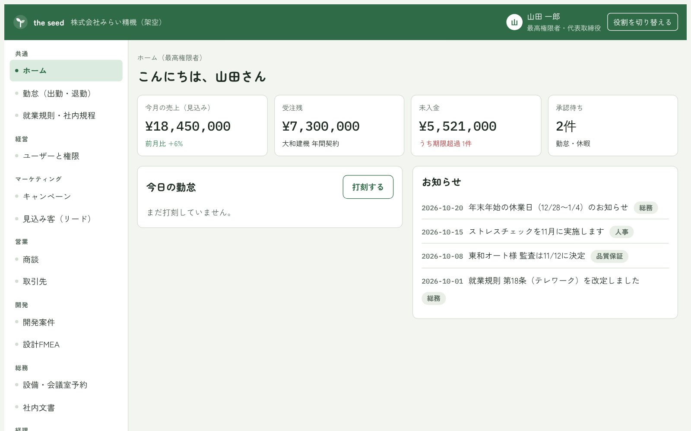

中小企業のための Mother AI
the seed
会社の知恵を、育てるAI。
就業規則・社内ルール・FMEA を登録すると、その会社だけの the seed に育ちます。設計・品質の資料づくりから、営業・人事・総務・経理の毎日の仕事まで、1つのアプリで支えます。AIは会社の中で動くので、社内の資料は外に出しません。

- 品質保証・開発FMEAからデザインレビュー資料や作業手順書の下書き
- 営業商談と売上を、日・週・月・四半期・年で比べる
- 人事・総務・経理GPS勤怠、就業規則の検索、設備予約、請求と入金
- マーケティング・特許似た商品や特許を調べる（イメージ図）
個人の方へ
小さな困りごとから、大きな困りごとまで。小さな予算で。
借金、モラハラ、パワハラ、家庭の問題、就職など。誰に話せばいいかわからない悩みを、まずはフォームで送ってください。相談と回答、心のカウンセリングは無料です。
今すぐつらい、消えてしまいたいと感じている方へ
the weed はフォームでの相談のため、お返事までお時間をいただきます。緊急の対応はできません。今すぐ誰かと話したいときは、次の窓口に電話してください。
- よりそいホットライン（24時間・無料）0120-279-338
- いのちの電話（ナビダイヤル）0570-783-556
- こころの健康相談統一ダイヤル0570-064-556
- 命の危険があるとき119（救急）／110（警察）
ゲームや小説など一次創作の仲間も募集しています。くわしくはサークル募集のページへ。